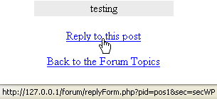

Forum Replies
This lesson is part of an ongoing Foruml tutorial. The first part is here: Build your own Forum, along with all the files you need. The previous lesson is here.
In the last section, there was a variable called $replyHTML. This is a hyperlink that, when clicked on, leads to a page called replyForm.php. Here's the code:
$replyHTML = "?pid=" . $postID . "&sec=" . $secCode;
When the link is displayed, and the mouse held over the link, you'll see this in the status bar at the bottom (you'll only see this link of you're logged in as a member):

The code above for the $replyHTML variable is adding the following after the question mark:
pid=pos1
sec = secWP
When the link is clicked, we're passing these two variables to the page called replyForm.php. The pos1 is which post the member wants to reply to, while the secWP is the forum section for Word Processing. When the member types the reply, we'll use these values to update the database table.
So, open up the code for replyForm.php (in your forum folder), and we'll see how it works.
(If you display the page in a browser, you'll see it's just a text area and a button. The member types the reply, and clicks the button.)
The first bit of code is just the usual checks to see if the user accessing the page has logged in. If they have, we grab the memberID, and put it in a variable:
session_start();
if (!(isset($_SESSION['login']) && $_SESSION['login'] != '')) {
header ("Location: login.php");
}
else {
$memberid = $_SESSION['memID'];
}
We also need to grab those variables from the previous page:
if ($_SERVER['REQUEST_METHOD'] == 'GET') {
$secCode = '';
$postID = '';
if (isset($_GET['pid'])) {
$postID = $_GET['pid'];
$secCode = $_GET['sec'];
}
}
So the pid variable (the one that contained "pos1", from the previous page) is handed over to a variable called $postID:
$postID = $_GET['pid'];
And the sec variable (the one that contained secWP) is handed to a variable called $secCode:
$secCode = $_GET['sec'];
All the PHP code does is to print out HTML for a FORM. The form will contain a textarea and a button. When the button is clicked, we'll process the data on another php page. The ACTION attribue of the FORM tag is where the processing page is located:
… METHOD ='POST' ACTION ='results.php'>";
We're going to be using the POST method to hand over our values to a page called results.php. Notice that the FORM also has hidden values:
$hidSec = "<INPUT TYPE = Hidden Name = h1 VALUE
=" . $secCode . ">";
$hidPost = "<INPUT TYPE = Hidden Name = h2 VALUE =" . $postID .
">";
$hidMem = "<INPUT TYPE = Hidden Name = h3 VALUE =" . $memberid
. ">";
And there's our three variables: $secCode, $postID, and $memberid. When the button on the form is clicked, these hidden variables will get handed over to the page that processes the data - the results.php page.
Notice, too, that the NAME attributes for these hidden variables are h1,
h2, and h3. The NAME of the textarea on the form is post. We'll
be passing all these values to the processing page ( results.php).
We'll have a look at that page in the next part.